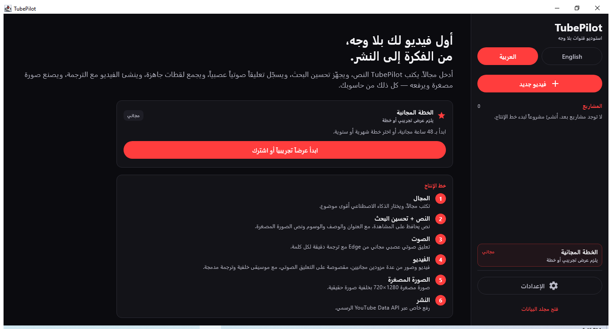

خط إنتاج يعمل دون إشراف
أدخل المجال أو الموضوع واضغط مرة. تُنفَّذ المراحل بالترتيب، وتظهر نسبة التقدّم في تبويب «تلقائي»، ويمكن الإيقاف أو إعادة المحاولة دون فقدان العمل المنجز.
TubePilot يكتب النص، يسجّل التعليق الصوتي، يرسم كل مشهد، ينتج فيديو 1080p بترجمة مدمجة، يصمّم الصورة المصغّرة ويرفعها إلى يوتيوب. نافذة واحدة، نقرة واحدة، وعلى جهازك أنت.

معظم أدوات الذكاء الاصطناعي تتوقف عند النص. TubePilot يكمل العمل عبر الصوت والمشاهد والمونتاج والصورة المصغّرة والنشر — ويُبقي كل خطوة قابلة للتعديل عندما تريد أن تتولى الأمر بنفسك.
أدخل المجال أو الموضوع واضغط مرة. تُنفَّذ المراحل بالترتيب، وتظهر نسبة التقدّم في تبويب «تلقائي»، ويمكن الإيقاف أو إعادة المحاولة دون فقدان العمل المنجز.
سرد يبدأ بخطّاف ويُقسَّم إلى مشاهد موقّتة، ولكل مشهد وصف بصري، مع عنوان ووصف ووسوم وكلمات للصورة المصغّرة.
أصوات Microsoft Edge العصبية بست عشرة لغة، مع توقيتات دقيقة لكل كلمة تُحوَّل إلى ملف ترجمة SRT. وإذا تعذّر الاتصال، تتولى أصوات ويندوز المثبّتة المهمة.
كل صورة تُرسم من وصف المشهد في النص نفسه، لا من بحث بكلمات مفتاحية. مقاطع فيديو بالذكاء الاصطناعي اختيارية، وحركة كين برنز بطيئة للصور الثابتة.
فيديو AI، صور AI، Pexels، Pixabay، Unsplash، المكتبة المرفقة، Openverse، Wikimedia وNASA — أول نتيجة صالحة تفوز، في كل مرة.
FFmpeg المرفق يقصّ المقاطع للطول المطلوب، يضبط المقاس على 1920×1080، يمزج موسيقى اختيارية، يدمج الترجمة ويكتب MP4 بترميز H.264/AAC.
ملف JPEG بمقاس 1280×720 من أقوى صورة مشهد، مع تدرّج لوني وكلماتك — أعد توليدها بنص مختلف في ثوانٍ.
رفع قابل للاستئناف عبر الواجهة الرسمية مع البيانات والصورة المصغّرة. الوضع الافتراضي «خاص»، ويدعم «غير مدرج» و«عام» والجدولة.
بدّل الواجهة كاملة من الشريط الجانبي. العربية تُعرض من اليمين إلى اليسار، ويُحفظ اختيارك عند التشغيل التالي.
المحرّك نفسه يعمل من سطر الأوامر مع «مجدول مهام ويندوز»: اختر مجالًا، أنتج وارفع يوميًا حسب جدول.
الإعدادات والمشاريع والفيديوهات والذاكرة المؤقتة في مجلد واحد داخل %APPDATA%. انسخه احتياطيًا، انقله، أو احذفه للبدء من جديد.
لا بوتات، لا أتمتة مشاهدات أو إعجابات، ولا تفاعل وهمي. الرفع يستخدم الواجهة الرسمية وحصتها الحقيقية — نحو ستة فيديوهات يوميًا.
يمكن أيضًا استخدام كل مرحلة على حدة من تبويبات المشروع، لإعادة توليد النص أو تغيير الصوت أو إعادة الإنتاج دون البدء من الصفر.
مفتاح واحد يقلب النافذة كاملة، بما في ذلك الشريط الجانبي وتبويبات المشروع والإعدادات وشاشة الاشتراك. العربية تُقرأ من اليمين إلى اليسار.

فعّل مشاهد الذكاء الاصطناعي ليُرسم كل مشهد من وصفه في النص. وإذا تركته مغلقًا أو نفدت الحصة أو انقطع الاتصال، يبقى الفيديو قابلاً للإنتاج — ينزل TubePilot في السلسلة حتى ينجح مصدر.
لا Python، لا تثبيت FFmpeg، لا أدوات بناء. التطبيق يحمل بيئة Java الخاصة به والمشفّر معه.
شغّل المثبّت، أو فكّ ضغط النسخة المحمولة وابدأ TubePilot.exe. ابدأ التجربة المجانية لـ48 ساعة من شاشة الاشتراك — دون بطاقة، مرة واحدة لكل حساب ويندوز.
افتح الإعدادات وألصق مفتاح Gemini المجاني للنصوص وSEO. أضف اختياريًا مفاتيح صور AI وستوك وصوتًا واتصال يوتيوب.
الإعداد لأول مرةاختر «فيديو جديد»، صف مجالك، اختر مدة من 2 إلى 20 دقيقة وشغّل كل شيء. تابع المراحل، ثم راجع MP4 والصورة المصغّرة.
أول فيديو لكويندوز 10 أو 11، 64 بت. كلا الملفين يحتويان التطبيق نفسه؛ اختر ما يناسب جهازك.
يثبّت للمستخدم الحالي دون طلب صلاحيات المدير، ويضيف اختصارًا في قائمة ابدأ وأداة إزالة. الإصدارات الجديدة تُحدَّث فوق القديمة مباشرة.
تحميل المثبّت
فكّ الضغط في أي مكان وشغّل TubePilot\TubePilot.exe. لا شيء
يُثبَّت؛ لكن الإعدادات والفيديوهات تبقى في %APPDATA%\TubePilot.
f0f6c679058620b4553702c05ffc341d0f6cf54ba135620f94e09266df25a7ff
5f889c17a629b2bccdcf0948b2859adc16ea32b1a54217b61427d4249ff2c056
Get-FileHash .\TubePilot-Setup-1.0.0.exe -Algorithm SHA256
SHA256SUMS.txt · الفيديوهات التجريبية وملفات الشرح في مجلد الإصدار
تنبيه SmartScreen. النسخة غير موقّعة رقميًا بعد، لذا قد يعرض ويندوز «Windows protected your PC». اضغط More info ثم Run anyway. يمكنك التحقق من بصمة SHA-256 أعلاه قبل التشغيل.
ترخيص واحد يفتح الاستوديو على جهاز واحد. الدفع يتم مباشرة عبر واتساب — OMT أو Whish Money أو USDT أو تحويل بنكي.
لديك مفتاح بالفعل؟ افتح الاشتراك ← تفعيل ترخيص، وألصق مفتاح
TP1… ليُتحقّق منه دون اتصال. المفتاح نفسه يعمل في تطبيقي ويندوز
وأندرويد. للأسئلة راسل +961 3 091 136.
تحتاج مفتاح AI واحدًا لفيديوهاتك، والطبقة المجانية من Gemini تكفي للنصوص وSEO.
الأمر --demo ينتج فيديو تجريبيًا كاملًا دون أي مفاتيح. الستوك
والمكتبة المرفقة والأصوات العصبية المجانية تعمل دون مفاتيح ستوك أو صوت.
فقط عند تشغيل خط الإنتاج مع تفعيل الرفع، والوضع الافتراضي خاص.
يمكنك الإنتاج محليًا بإيقاف «الرفع بعد الإنتاج»، أو استخدام
--no-upload، أو عدم ربط يوتيوب إطلاقًا.
ست عشرة لغة للتعليق الصوتي: الإنجليزية (أمريكية وبريطانية)، الإسبانية، الفرنسية، الألمانية، الإيطالية، البرتغالية، العربية، الهندية، الأردية، التركية، الإندونيسية، الروسية، اليابانية، الكورية والصينية. أما واجهة التطبيق فتبدّل بين العربية والإنجليزية.
نعم. الإنتاج يستخدم المعالج وFFmpeg المرفق. كرت الشاشة يساعد النافذة فقط؛ وعلى
أسطح المكتب البعيدة أو الأجهزة الافتراضية دون دعم 3D، اضبط
TUBEPILOT_SOFTWARE_RENDER=1 قبل التشغيل.
محرّك الإنتاج والمكتبة المرفقة وFFmpeg محلية، لذا يمكن إنتاج فيديو دون اتصال. النصوص وSEO تحتاج مزوّد الذكاء الاصطناعي، والستوك يحتاج إنترنت، وأصوات Edge تحتاج إنترنت. أصوات Windows SAPI تغطي التعليق الصوتي دون اتصال.
تمنح YouTube 10,000 وحدة API يوميًا، والرفع الواحد يكلّف نحو 1,600، أي ما يقارب ستة رفع يوميًا لكل مشروع Google Cloud. الإنتاج المحلي بلا حدود. التفاصيل في دليل يوتيوب.
ثبّت، ابدأ تجربة الـ48 ساعة، ألصق مفتاح Gemini المجاني واضغط «إنشاء وتشغيل كل شيء». الدليل الكامل يشرح كل شاشة وكل إعداد.